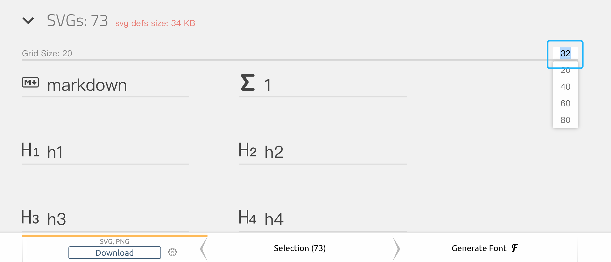

安装
-
获取图标并解压
-
在思源中依次点击 设置 - 外观 - 图标 - 打开图标文件夹
-
将图标拷贝到该文件夹中
-
重启思源后在 设置 - 外观 - 图标 中选择安装好的图标
开发
步骤
-
为你的图标取一个好听的名字，如
alice -
在思源中依次点击 设置 - 外观 - 图标 - 打开图标文件夹
-
在打开的文件夹中新建文件夹
alice，在alice中新建icon.js和icon.json文件icon.json文件如下：{ "author": "Vanessa", "url": "https://github.com/Vanessa219" "version": "1.0.0" } -
打开
icon.js文件，贴入制作完成的图标 -
重启思源后在 设置 - 外观 - 图标 中选择安装好的图标
图标的制作
-
使用浏览器打开图标文件夹中的
index.html文件 -
根据图标名称和形状制作相似的图标
-
前往 IcoMoon App 制作
icon.js-
点击右上角的
Import Icons导入上一步制作好的图片 -
选中图标并生成 SVG

-
修改大小并下载
-
修改
<symbol id="icon-markdown" viewBox="0 0 32 32">中的id为index.html对应的图标名 -
将
<defs>...</defs>中的内容替换到icon.js中对应的位置
-
-
测试
-
将
index.html中material替换为alice<script src="material/icon.js"></script> -
刷新
index.html查看最终效果 -
打开思源在 设置 - 外观 - 图标 中选择开发完成的图标进行查看
-
-
上架发布（联系 QQ：84588990）